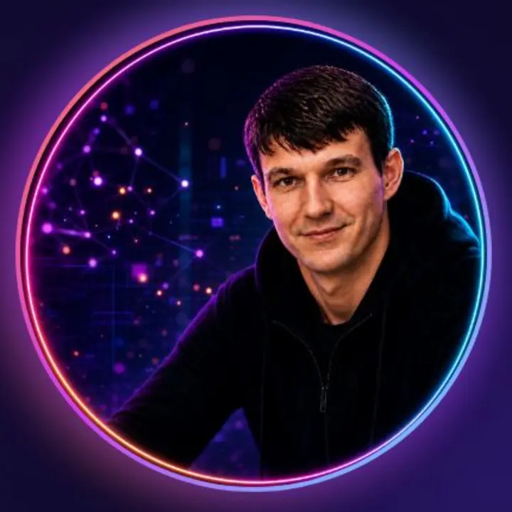

Нейрофотосессии
Реалистичные образы с сохранением внешности для личного бренда, соцсетей, подарков и рекламы.
- подбор образа, одежды и локации;
- контроль лица, рук и анатомии;
- без случайных надписей и татуировок.
Удалённо · для бизнеса и личного бренда
Нейрофотосессии • Дизайн • Тексты • Сайты
Создаю нейрофотосессии, карточки товаров, рекламные материалы, тексты и сайты для экспертов, малого бизнеса и продавцов маркетплейсов. Беру задачу от идеи до готового результата.
Сначала уточню задачу и назову стоимость. Оплата только после согласования условий.

Услуги
Подберу понятное решение под вашу задачу. Если не уверены, что услуга вам подходит, сначала бесплатно уточню объём работы.
Реалистичные образы с сохранением внешности для личного бренда, соцсетей, подарков и рекламы.
Карточки Ozon и Wildberries, баннеры, логотипы, презентации и оформление социальных сетей.
Лендинги и портфолио с текстами, кнопками, контактами и полноценной мобильной версией.
Посты, описания услуг и товаров, сценарии, переводы и тексты для презентаций.
Примеры и направления
Не показываю выдуманные отзывы и результаты. Ниже — реальный опубликованный проект и переход к подборке визуальных работ.
Структура, текст, дизайн, мобильная адаптация, кнопки контактов и публикация профессионального сайта.
Открыть сайт ↗Образы, рекламные визуалы, баннеры, оформление и другие примеры собраны в Telegram.
Смотреть подборку ↗Пришлите пример или коротко опишите задачу. Я предложу формат работы и заранее назову стоимость.
Обсудить задачу →Стоимость
Подтверждённые цены на карточки и баннеры. Другие услуги рассчитываю после уточнения объёма — без скрытых доплат.
Одна карточка для Ozon или Wildberries.
5 карточек — от 3 000 ₽; 7 — от 4 000 ₽; 10 — от 5 500 ₽.
Один баннер — от 1 000 ₽; комплект из трёх — от 2 500 ₽.
Нейрофотосессии, тексты, презентации и сайты оцениваются индивидуально: цена зависит от количества материалов, сложности и сроков.
Как проходит работа
Вы присылаете задачу и примеры.
Я уточняю детали, срок и стоимость.
Согласовываем направление и начинаем.
Вы получаете вариант на проверку.
Вношу согласованные правки и передаю файлы.
Обо мне
Я AI-креатор, дизайнер и копирайтер с высшим экономическим образованием. Помогаю экспертам, предпринимателям и брендам получать понятный и качественный результат.
Работаю удалённо: обсудить задачу, согласовать материалы и получить готовые файлы можно полностью онлайн.
Использую нейросети там, где они улучшают качество и ускоряют работу, но финальный результат всегда проверяю вручную.
Частые вопросы
Коротко опишите задачу, укажите желаемый срок и приложите примеры. Если технического задания нет, я помогу сформулировать вопросы.
Да. Обсуждение, согласование, передача материалов и готовых файлов проходят онлайн.
До начала работы. Сначала я уточню объём и сложность, после чего сообщу стоимость и срок.
Да. Количество и состав правок согласуем до начала работы, чтобы условия были понятны обеим сторонам.
Контакты
Самый быстрый способ связи — Telegram. Можно написать одним сообщением: что нужно, для кого и к какому сроку.
Instagram может быть недоступен в отдельных регионах; Telegram, VK, почта и телефон оставлены как основные варианты связи.